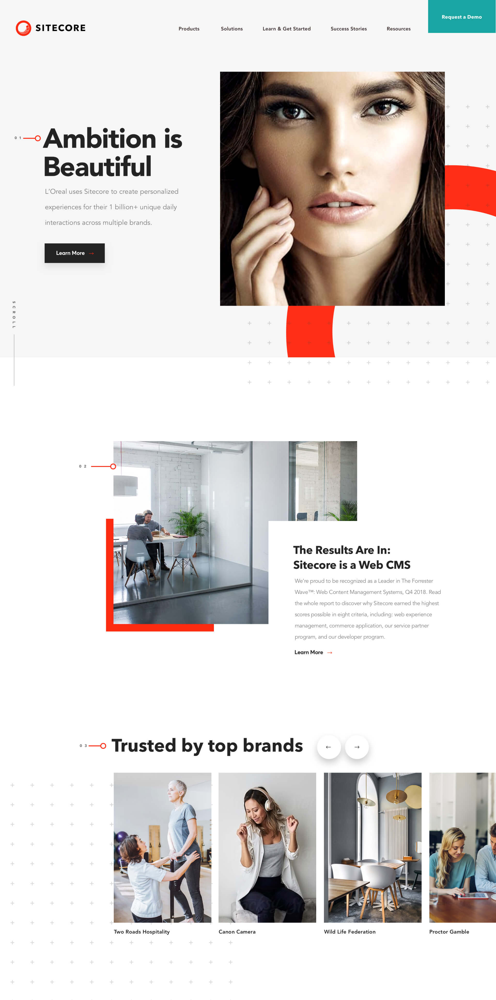
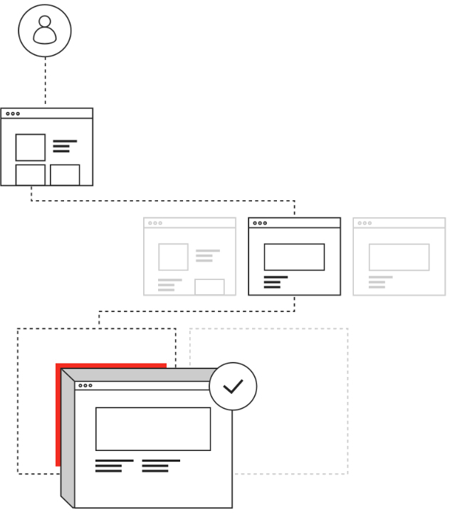

Services
- Strategy
- UX
- Visual Design
- Branding
Sitecore’s content management system is leading the industry and is trusted by global giants like Loreal, Microsoft, & Volvo.
Sitecore came to ANML with a need to evolve and push their brand to new heights. Through a series of high speed workshops we were able to fast track a brand refresh, creating alignment between stakeholders, testing on customers, and delivering a system that agency partners could adopt and execute across digital and print properties.

Visual building blocks
Sitecore needed an illustration style to clearly communicate their platforms power. Matching key design principles, we created a set of visually sophisticated elements to be used as building blocks for conveying unique technical concepts. Delivering a small library of graphics, we gave the power to Sitecore's vendors and internal team to consistently generate new infographics rapidly.
